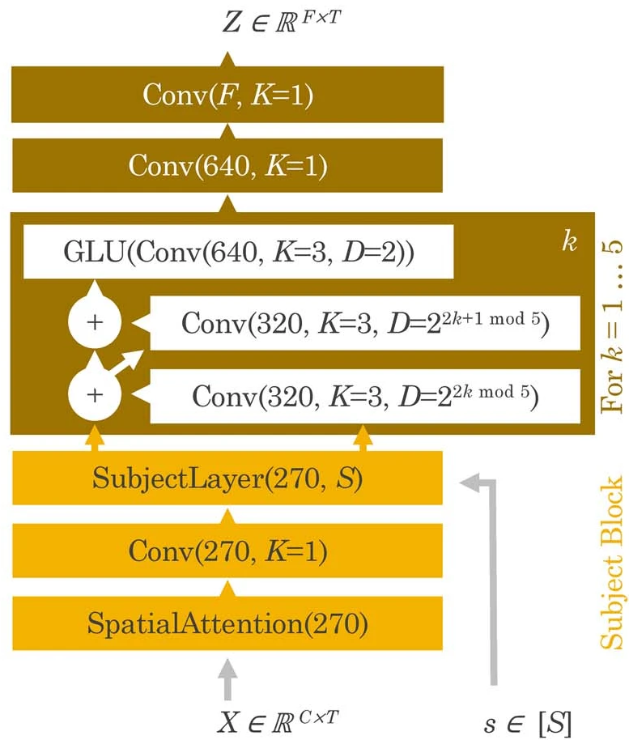

braindecode.models.BrainModule#
- class braindecode.models.BrainModule(n_chans=None, n_outputs=None, n_times=None, sfreq=None, chs_info=None, input_window_seconds=None, hidden_dim=320, depth=10, kernel_size=3, growth=1.0, dilation_growth=2, dilation_period=5, use_merger=False, n_virtual_channels=270, merger_drop_prob=0.2, conv_drop_prob=0.0, dropout_input=0.0, batch_norm=True, activation=<class 'torch.nn.modules.activation.GELU'>, n_subjects=200, subject_dim=0, subject_layers=False, subject_layers_dim='input', subject_layers_id=False, embedding_scale=1.0, n_fft=None, fft_complex=True, channel_dropout_prob=0.0, channel_dropout_type=None, glu=2, glu_context=1)[source]#
BrainModule from [brainmagick], also known as SimpleConv.
A dilated convolutional encoder for EEG decoding, using residual connections and optional GLU gating for improved expressivity.
Convolution

Figure adapted Extended Data Fig. 4 from [brainmagick] to highlight only the model part. Architecture of the brain module. Architecture used to process the brain recordings. For each layer, the authors note first the number of output channels, while the number of time steps is constant throughout the layers. The model is composed of a spatial attention layer, then a 1x1 convolution without activation. A ‘Subject Layer’ is selected based on the subject index s, which consists in a 1x1 convolution learnt only for that subject with no activation. Then, the authors apply five convolutional blocks made of three convolutions. The first two use residual skip connection and increasing dilation, followed by a BatchNorm layer and a GELU activation. The third convolution is not residual, and uses a GLU activation (which halves the number of channels) and no normalization. Finally, the authors apply two 1x1 convolutions with a GELU in between.#
The BrainModule (also referred to as SimpleConv) is a deep dilated convolutional encoder specifically designed to decode perceived speech from non-invasive brain recordings like EEG and MEG. It is engineered to address the high noise levels and inter-individual variability inherent in non-invasive neuroimaging by using a single architecture trained across large cohorts while accommodating participant-specific differences.
Architecture Overview
The BrainModule integrates three primary mechanisms to align brain activity with deep speech representations:
Spatial-temporal feature extraction. Temporal processing is performed through dilated convolutions. An optional spatial attention layer (
ChannelMerger, enabled viause_merger=True) can remap sensor data based on physical electrode locations before the temporal stack; it is off by default so the default behavior is a plain channel projection.Subject-specific adaptation. To leverage inter-subject variability, the architecture includes a “Subject Layer” or participant-specific 1x1 convolution that allows the model to share core weights across a cohort while learning individual-specific neural patterns.
Dilated residual blocks with gating. The core encoder employs a stack of convolutional blocks featuring skip connections and increasing dilation to expand the receptive field without losing temporal resolution, supplemented by optional Gated Linear Units (GLU) for increased expressivity.
Macro Components
BrainModule.input_projection(Initial Processing)Operations. Raw M/EEG input \(\mathbf{X} \in \mathbb{R}^{C \times T}\) is optionally first processed through a spatial attention layer (
ChannelMerger, only whenuse_merger=True) that projects sensor locations onto a 2D plane using Fourier-parameterized functions, remapping then_chanssensors ton_virtual_channelsmontage-agnostic virtual channels. This is followed by a subject-specific 1x1 convolution \(\mathbf{M}_s \in \mathbb{R}^{D_1 \times D_1}\) if subject features are enabled. The resulting features are projected by a plainnn.Conv1dto thehidden_dim(default 320) to ensure compatibility with subsequent residual connections.Role. Converts high-dimensional, subject-dependent sensor data into a standardized latent space while preserving spatial and temporal relationships.
BrainModule.encoder(Convolutional Sequence)Operations. Implemented via
_ConvSequence, this component consists of a stack ofkconvolutional blocks. Each block typically contains: (a) Residual dilated convolutions. Two layers with kernel size 3, residual skip connections, and dilation factors that grow exponentially (e.g., powers of two with periodic resets) to capture multi-scale temporal context. (b) GLU gating. EveryNlayers (defined byglu), a Gated Linear Unit is applied, which halves the channel dimension and introduces non-linear gating to filter intermediate representations.Role. Extracts deep hierarchical temporal features from the brain signal, significantly expanding the model’s receptive field to align with the contextual windows of speech modules like wav2vec 2.0.
Temporal, Spatial, and Spectral Encoding
Temporal: Increasing dilation factors across layers allow the model to integrate information over large time windows without the computational cost of standard large kernels, while a 150 ms input shift facilitates alignment between stimulus and brain response.
Spatial: When
use_merger=True, the optional spatial attention layer learns a softmax weighting over input sensors based on their electrode(x, y)coordinates, allowing the model to focus on regions typically activated during auditory stimulation (e.g., the temporal cortex). It auto-disables (with a warning) ifchs_infolacks usable locations.Spectral: Through the optional
n_fftparameter, the model can apply an STFT transformation, converting time-domain signals into a spectrogram representation before encoding.
Additional Mechanisms
Clamping and scaling: The model relies on clamping input values (e.g., at 20 standard deviations) to prevent outliers and large electromagnetic artifacts from destabilizing the BatchNorm estimates and optimization process.
Scaled subject embeddings: When
subject_dimis used, the_ScaledEmbeddinglayer scales up the learning rate for subject-specific features to prevent slow convergence in multi-participant training._ConvSequence and residual logic: This class handles the actual stacking of layers. It is designed to be flexible with the
growthparameter; if the channel size changes between layers (growth != 1.0), it automatically applies a 1x1skip_projectionconvolution to the residual path so dimensions match for addition._ChannelDropout: Unlike standard dropout which zeroes individual neurons, this zeroes entire channels. It includes a rescale feature that multiplies the remaining channels by a factor
total_channels / active_channelsto maintain the expected value of the signal during training._ScaledEmbedding: This is a clever optimization for multi-subject learning. By dividing the initial weights by a scale and then multiplying the output by the same scale, it effectively increases the gradient magnitude for the embedding weights, allowing subject-specific features to learn faster than the shared backbone.
- Parameters:
n_outputs (
int|None) – Number of outputs of the model. This is the number of classes in the case of classification.n_times (
int|None) – Number of time samples of the input window.sfreq (
float|None) – Sampling frequency of the EEG recordings.chs_info (
list[dict] |None) – Information about each individual EEG channel. This should be filled withinfo["chs"]. Refer tomne.Infofor more details.input_window_seconds (
float|None) – Length of the input window in seconds.hidden_dim (
int) – Hidden dimension for convolutional layers. Input is projected to this dimension before the convolutional blocks.depth (
int) – Number of convolutional blocks. Each block contains a dilated convolution with batch normalization and activation, followed by a residual connection.kernel_size (
int) – Convolutional kernel size. Must be odd for proper padding with dilation.growth (
float) – Channel size multiplier: hidden_dim * (growth ** layer_index). Values > 1.0 grow channels deeper; < 1.0 shrink them. Note: growth != 1.0 disables residual connections between layers with different channel sizes.dilation_growth (
float) – Dilation multiplier per layer (e.g., 2 means dilation doubles each layer). Improves receptive field exponentially. Requires odd kernel_size.dilation_period (
int) – Reset dilation to 1 every N layers. Prevents dilation from growing too large and maintains local connectivity.use_merger (
bool) – If True, prepend a spatial FourierChannelMergerremapping then_chanssensors onton_virtual_channelsmontage-agnostic virtual channels via softmax attention over a Fourier embedding of the electrode(x, y)positions (fromchs_info). Default False preserves the plain channel-projection behavior. Ifchs_infohas no usable locations (locmissing or all-zero),use_mergerauto-disables with aUserWarning(get_config()still reports the requested value). Footgun: the merger weights exist only when active, so a savedstate_dictreloads only into a model built with the samechs_info;get_config()/from_config()(and Hugging Face) serializechs_infoand round-trip, but a manualstate_dictcopy droppingchs_infosilently disables the merger and fails a strict load.n_virtual_channels (
int) – Virtual output channels from the spatial merger. Only used whenuse_merger=True; becomes the effective channel count for all downstream layers (subject layers, STFT, projection).merger_drop_prob (
float) – Spatial-attention dropout radius of the merger (non-parametric, training only) – NOT a Bernoulli probability. Each training step draws a random center in normalized[0, 1]^2position space and bans every channel within this radius. Must be in[0, 1); values>= 1ban all channels and zero the merger output. Only used whenuse_merger=True.conv_drop_prob (
float) – Dropout probability for convolutional layers.dropout_input (
float) – Dropout probability applied to model input only.batch_norm (
bool) – If True, apply batch normalization after each convolution.activation (
type[Module]) – Activation function class to use (e.g., nn.GELU, nn.ReLU, nn.ELU).n_subjects (
int) – Number of unique subjects (for subject-specific pathways). Only used if subject_dim > 0.subject_dim (
int) – Dimension of subject embeddings. If 0, no subject-specific features. If > 0, adds subject embeddings to the input before encoding.subject_layers (
bool) – If True, apply subject-specific linear transformations to input channels. Each subject has its own weight matrix. Requires subject_dim > 0.subject_layers_dim (
str) – Where to apply subject layers: “input” or “hidden”.subject_layers_id (
bool) – If True, initialize subject layers as identity matrices.embedding_scale (
float) – Scaling factor for subject embeddings learning rate.n_fft (
int|None) – FFT size for STFT processing. If None, no STFT is applied. If specified, applies spectrogram transform before encoding.fft_complex (
bool) – If True, keep complex spectrogram. If False, use power spectrogram. Only used when n_fft is not None.channel_dropout_prob (
float) – Probability of dropping each channel during training (0.0 to 1.0). If 0.0, no channel dropout is applied.channel_dropout_type (
str|None) – If specified with chs_info, only drop channels of this type (e.g., ‘eeg’, ‘ref’, ‘eog’). If None with dropout_prob > 0, drops any channel. Not supported together withuse_merger=True(the merger remaps the raw sensors to virtual channels, so thechs_infochannel types no longer match the tensor) – raisesValueErrorif both are set.glu (
int) – If > 0, applies Gated Linear Units (GLU) every N convolutional layers. GLUs gate intermediate representations for more expressivity. If 0, no GLU is applied.glu_context (
int) – Context window size for GLU gates. If > 0, uses contextual information from neighboring time steps for gating. Requires glu > 0.
- Raises:
ValueError – If some input signal-related parameters are not specified: and can not be inferred.
Notes
Input shape: (batch, n_chans, n_times)
Output shape: (batch, n_outputs)
The model uses dilated convolutions with stride=1 to maintain temporal resolution while achieving large receptive fields.
Residual connections are applied at every layer where input and output channels match.
Subject-specific features (subject_dim > 0, subject_layers) require passing subject indices in the forward pass as an optional parameter or via batch.
STFT processing (n_fft > 0) automatically transforms input to spectrogram domain.
Note
Differences from the upstream brainmagick / neuraltrain SimpleConv (all verified): default
kernel_sizeis3(vs9) anddilation_growthis2(vs2.5), with non-integer values supported via the per-layer dilation int-cast;dilation_period=5adds a periodic dilation reset the upstream DANCE config omits;batch_norm,glu, and the residual skip connections default on (upstream DANCE leaves them off); the head isAdaptiveAvgPool1d -> Linearyielding one(batch, n_outputs)prediction (upstream emits a per-timestep sequence); optionalSubjectLayers, STFT, and channel-dropout extras are added; and the spatialChannelMerger(opt-in viause_merger=True) is shared with DANCE.Added in version 1.2.
Hugging Face Hub integration
When the optional
huggingface_hubpackage is installed, all models automatically gain the ability to be pushed to and loaded from the Hugging Face Hub. Install with:pip install braindecode[hub]
Pushing a model to the Hub:
from braindecode.models import BrainModule # Train your model model = BrainModule(n_chans=22, n_outputs=4, n_times=1000) # ... training code ... # Push to the Hub; ``datasets`` and ``base_model`` go to the card model.push_to_hub( repo_id="username/my-brainmodule-model", commit_message="Initial model upload", model_card_kwargs={"datasets": ["BNCI2014_001"]}, )
Loading a model from the Hub:
from braindecode.models import BrainModule # Load pretrained model model = BrainModule.from_pretrained("username/my-brainmodule-model") # Data the weights were trained on, from the Hub model card print(model.card_data.datasets if model.card_data else None) # Load with a different number of outputs (head is rebuilt automatically) model = BrainModule.from_pretrained("username/my-brainmodule-model", n_outputs=4)
Extracting features and replacing the head:
import torch x = torch.randn(1, model.n_chans, model.n_times) # Extract encoder features (consistent dict across all models) out = model(x, return_features=True) features = out["features"] # Replace the classification head model.reset_head(n_outputs=10)
Saving and restoring full configuration:
import json config = model.get_config() # all __init__ params with open("config.json", "w") as f: json.dump(config, f) model2 = BrainModule.from_config(config) # reconstruct (no weights)
All model parameters (both EEG-specific and model-specific such as dropout rates, activation functions, number of filters) are automatically saved to the Hub and restored when loading.
See Loading and Adapting Pretrained Foundation Models for a complete tutorial.
References
Methods